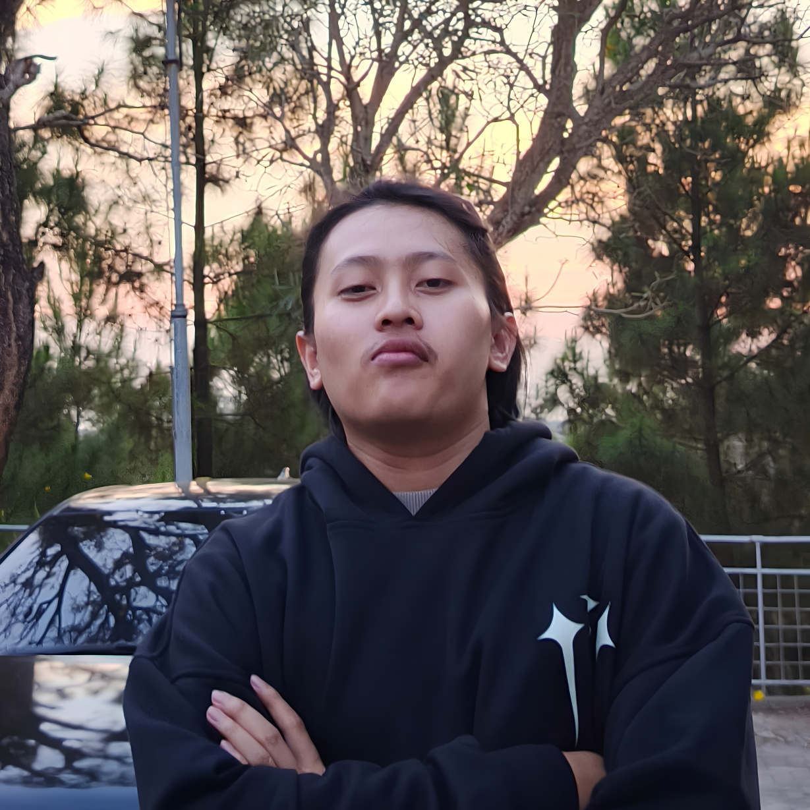

Biodata Diri

Fathan Rafif Athaya
Mahasiswa Teknik Informatika
Mahasiswa aktif jurusan Teknik Informatika semester 5 di UIN Sunan Gunung Djati Bandung dengan fokus pada Pengembangan Aplikasi Web dan Rekayasa Perangkat Lunak. Berkomitmen untuk terus belajar dan membangun solusi digital yang responsif serta mudah diakses.
Informasi Akademik
- NIM: 1247050044
- Program Studi: S1 Teknik Informatika
- Fakultas: Sains dan Teknologi
- Semester: 5 (Ganjil)
- Status: Mahasiswa Aktif
- Minat: Web Development, UI/UX, Cloud Computing
Daftar Mata Kuliah Semester Ini
Rincian Beban Studi
| No | Kode MK | Nama Mata Kuliah | SKS | Dosen Pengampu |
|---|---|---|---|---|
| 1 | 20100470501034 | Manajemen Proyek Perangkat Lunak | 3 | Agung Wahana S.E., M.T. |
| 2 | 20100470501024 | Manajemen Basis Data | 3 | Wildan Budiawan Zulfikar S.T., M.Kom. |
| 3 | 20100470501033 | Intelegensia Buatan | 3 | Jumadi ST., M.Cs. |
| 4 | 20100470503006 | Kewirausahaan & Etika Bisnis | 2 | Adam Faroqi ST., MT. |
| 5 | 20100470501032 | Interaksi Manusia dan Komputer | 3 | Dr. Cepy Slamet S.T., M.Kom. |
| 6 | 20100470501028 | Pengembangan Aplikasi Mobile | 3 | H. Aldy Rialdy Atmadja M.T |
| 7 | 20100470501026 | Jaringan Komputer | 3 | Cecep Nurul Alam M.T. |
| 8 | 20100470501030 | Pengembangan Aplikasi Web | 3 | Muhammad Deden Firdaus ST, M.Kom. |
| Total Beban SKS Semester Ini | 23 SKS | |||
Kontak & Tautan Eksternal
Hubungi Saya
Silakan terhubung atau melihat repositori proyek saya melalui tautan di bawah ini: